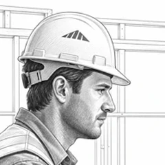
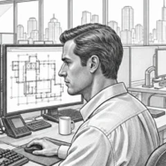

- Systems thinking
- UX architecture
Managing attributes and schemas across accounts and projects
Adapting a shared data platform to construction workflows, while preserving project autonomy and account standards.



Construction project teams, architects
& BIM managers